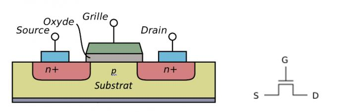
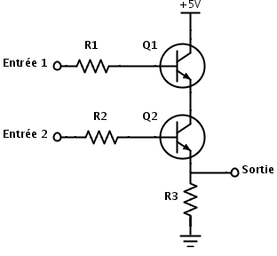

| Project | II. Les portes logiques | III. Algèbre de Boole | IV. Composition d’un ordinateur |
Le transistor est un petit composé électronique, ressemblant fortement à un interrupteur. Il a été inventé en 1947 par les scientifiques américains John Bardeen, William Shockley et Walter Brattain, chercheurs des Laboratoires Bell. Ils ont reçu pour cette invention le prix Nobel de physique en 1956. Ce composant électronique peut laisser passer le courant (état électrique haut, ou à état logique à 1), ou il peut le bloquer (état bas, ou à 0). C'est d'ailleurs un semi-conducteur. Il est gravé sur une plaque de silicium, grâce à de la lumière UV.

Si une tension est appliquée à la grille, des électrons libres se forment entre émetteur et récepteur (respectivement source et drain) et le courant envoyé depuis l'émetteur peut alors passer pour arriver jusqu'au récepteur, via ce canal d'électrons. Si cette tension n'existe pas, ce passage pour les électrons et clos et le courant ne passe plus.
La taille du transistor a ensuite diminué, et la finesse de gravure avec elle, pour atteindre aujourd'hui quelques nanomètres.
Les transistors permettent la création de toutes les portes logiques existantes.
Porte AND avec deux transistors
